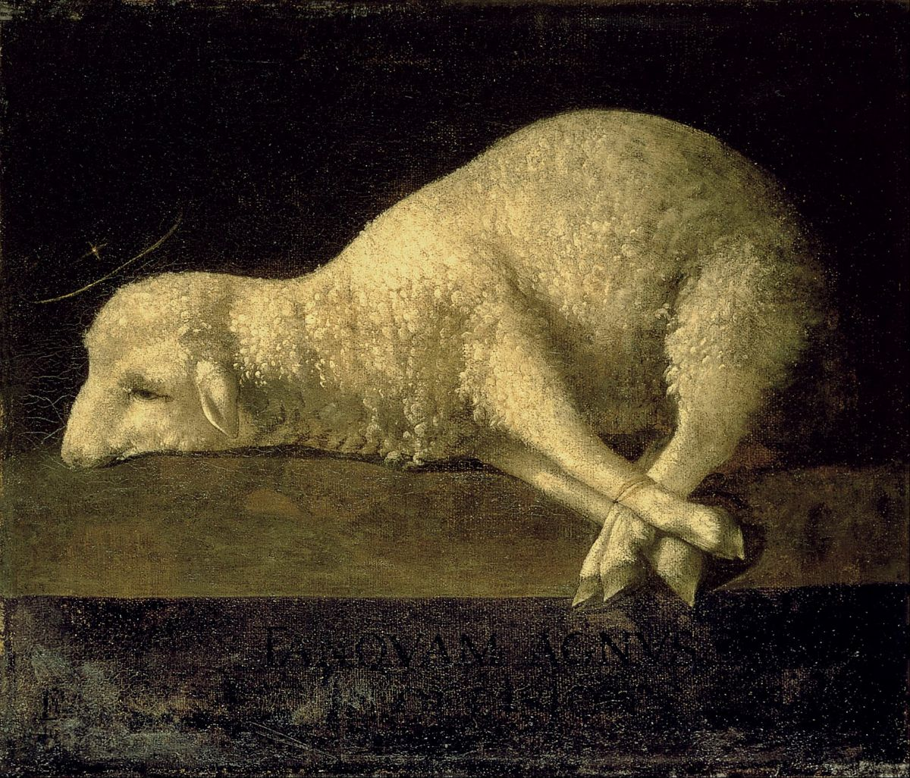
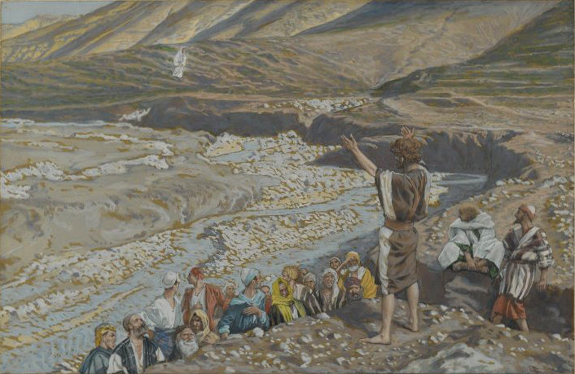
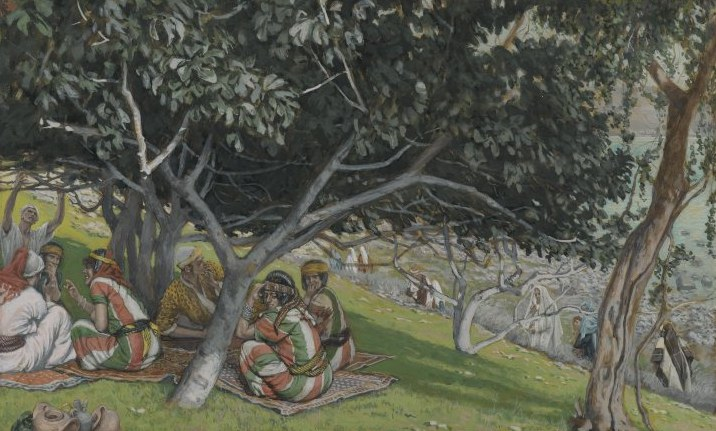
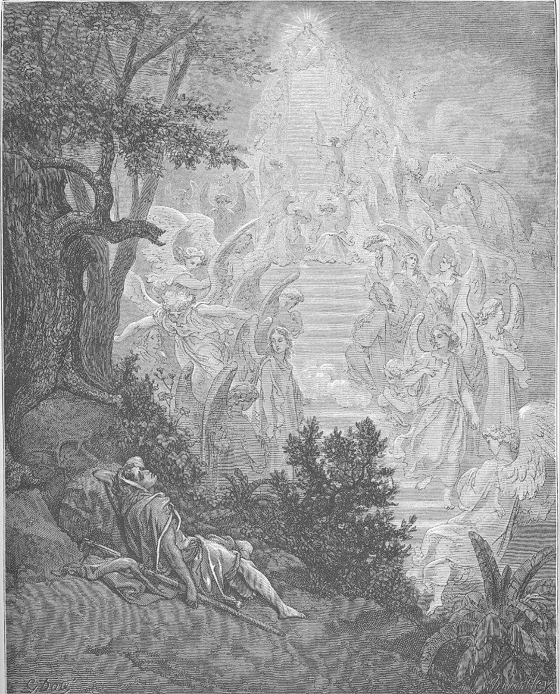

John 1
The Word, the witness, and the Lamb
John the Baptist tells the world who Jesus is, and what he came to do.
Things to watch for
Keep these questions in the back of your mind as we read. We'll come back to every one of them at the end.
- Who Jesus isWas Jesus created, or is he God?
- Salvation (soteriology)How does a person become a child of God?
- Light and darknessCan the darkness put out the light?
- The Lamb of GodWhat did Jesus come to do?
- Being a witnessWhat does a witness do?
- A new nameWhat happens when Jesus meets someone?
The Gospel of John
Who: John, son of Zebedee, a fisherman and one of the twelve, “the disciple whom Jesus loved” (21:20). Not John the Baptist.
When: about AD 85 to 95, as an old man, in Ephesus. The last Gospel written.
To whom: believers, and anyone still looking: “that ye might believe that Jesus is the Christ, the Son of God” (20:31).
But the story happens in the land: at Bethabara beyond Jordan, where John was baptizing (v. 28), then north into Galilee (v. 43).
Where John 1 fits
- about 5 BCJesus is born in Bethlehem
- about AD 27John baptizes; Jesus beginsthis chapter
- about AD 30 or 33the cross and the empty tomb
- AD 70Rome destroys the temple
- about AD 85–95John writes his Gospel
John wrote some sixty years after that first day by the Jordan, and he still remembered the hour: “about the tenth hour” (v. 39).
The other three Gospels were already out. John doesn't repeat them much. He picks out signs and sayings that show who Jesus is, so we would believe and have life.
Part one
The Word
Verses 1–18
Before anything existed, he was already there.
John starts where the Bible starts
Genesis 1:1
In the beginning God created the heaven and the earth.
John 1:1
In the beginning was the Word, and the Word was with God, and the Word was God.
Genesis tells us what God made in the beginning. John tells us who was already there when it began. The Word didn't start at the beginning. He was there when the beginning happened.
What does “the Word” mean?
Your words show people what's going on inside you. Jesus is God's Word. When we look at Jesus, we see exactly what God is like. Verse 18 says it plainly: he “hath declared him.”
Was Jesus created?
Some groups teach that Jesus was the first thing God created. Verse 3 closes that door.
If he made every thing that was made, he can't be one of the things that were made. The Maker isn't part of what he made. Jesus is the Creator. He is God.
“Comprehended it not”
Here “comprehended” means grabbed hold of, overpowered (Greek katalambanō). The darkness has tried to seize the light and snuff it out. It never has, and it never will.
Strike a match in a dark room. The dark doesn't fight back. It just leaves. Whatever darkness you came out of, it's weaker than Jesus.
How do you become a child of God?
“Power” here means the right, the legal standing (Greek exousia). Think adoption papers. Once they're signed, that child belongs to the family.
- not of bloodyour family line can't do it
- nor of the will of the fleshyour own willpower can't do it
- nor of the will of mannobody else can decide it for you
- but of Goda new birth only he can give
And who is it offered to? “As many as received him.” Anyone who believes on his name. Nobody is too far gone to be offered this.
God pitched his tent
“Dwelt” means lived in a tent (Greek skēnoō). It points back to the tabernacle, the tent God had Israel set up in the middle of their camp.
When it was finished, “the glory of the LORD filled the tabernacle” (Exodus 40:34).
Now God has pitched his tent among us again, this time in a human body. “The Word was made flesh.”
Born later, yet before
John was born first. But Jesus “was before” him, because the Word existed before everything. Jesus' birth in Bethlehem was when God took on flesh. It wasn't when he started existing.
The law and grace
Through Moses
The law
Shows God's standard, and shows us exactly where we fall short. “By the law is the knowledge of sin” (Romans 3:20).
Through Jesus
Grace and truth
Grace: favour you didn't earn and can't pay back. Truth: the real thing, no more shadows.
“Grace for grace” means grace on top of grace, like waves rolling in one after another. His grace doesn't run out.
“Only begotten” doesn't mean “made”
Proof from the Bible itself: Hebrews 11:17 calls Isaac Abraham's “only begotten son.” But Abraham had another son, Ishmael. Isaac wasn't the only son. He was the unique one, the son of the promise.
Jesus isn't God's first creation. He is God's one and only Son, God himself, from forever. And “declared” is where we get our word exegesis: to explain, to lay out. Jesus explains God to us.
Part two
The witness
Verses 19–34
A voice in the wilderness points away from himself, to the Lamb.
Three questions, three no's
Notice John's answers keep getting shorter. He refuses to make it about himself. (Jesus later said John came in the spirit and power of Elijah, Matthew 11:14 and Luke 1:17. But John wasn't Elijah come back, and he wasn't going to take any credit.)
Clearing the road
Before a king traveled, workers went ahead of him to fill in the holes, cut down the hills, and straighten the road.
Isaiah 40:4: “Every valley shall be exalted, and every mountain and hill shall be made low: and the crooked shall be made straight.”
John's job was getting people ready for Jesus by calling them to repent: to turn around and clear out whatever stands in the way.
The lowest job in the house
Roads were dirt and dung. When a guest came in, untying his filthy sandals was a slave's job, the lowest one there was.
John was the most famous preacher in Israel. Crowds came out to hear him. He said he wasn't worthy to do even that for Jesus.

Behold the Lamb
At the first Passover, a lamb died and its blood went on the doorposts. Death passed over that house (Exodus 12).
After that, two lambs were offered every single day, morning and evening, year after year (Exodus 29:38–39). Sin was covered, but never removed. “It is not possible that the blood of bulls and of goats should take away sins” (Hebrews 10:4).
Then John points at Jesus. The Lamb of God, God's own Lamb. He doesn't just cover sin. He takes it away. And not for one family or one nation, but for the world.
Father, Son, and Holy Spirit
The Father sent John and gave him the sign to watch for. The Spirit came down and remained on Jesus. One God, all three present in one scene.
John baptized with water, on the outside. Jesus baptizes with the Holy Ghost, God's own Spirit coming to live inside everyone who believes.
Part three
Come and see
Verses 35–51
The first followers meet Jesus, and immediately go get somebody else.

“What seek ye?”
These are the very first words Jesus speaks in John's Gospel, and they're a question: What are you looking for?
He asks it of everyone who starts following him. Some come looking for relief, some for answers, some for a fresh start. Jesus wants you to be honest about it.
“Rabbi” means teacher. “Where dwellest thou?” means where are you staying? They didn't want a quick answer. They wanted time with him. Jesus didn't argue. He said, “Come and see.”
The tenth hour
Hours were counted from sunrise, around 6 a.m. So the tenth hour was about 4 in the afternoon.
They didn't just stop by. They stayed with him the rest of the day. Spending time with Jesus is how following him starts.
Messiah, Christ, Anointed
All three words mean the same thing. In the Old Testament, prophets, priests, and kings had oil poured on their heads to show God had chosen them.
“Christ” isn't Jesus' last name. It's his title. He is the Anointed One: Prophet, Priest, and King all in one.
A new name
Simon was impulsive and unsteady. Later he would deny Jesus three times. Jesus named him “Rock” anyway, on the very first day they met.
Jesus calls you by who you're becoming, not by who you've been.
Who brought whom
Nazareth was a small village that the Old Testament never mentions once. Nathanael's doubt made sense. Philip didn't argue. He just said, “Come and see.”
Almost everyone in this chapter met Jesus because somebody told them. You don't need all the answers. Tell what you've found, and bring someone.

No guile, and a fig tree
“Guile” means deceit, trickery, a hidden angle.
Israel's forefather Jacob was famous for it. He tricked his father into giving him his brother's blessing: “Thy brother came with subtilty” (Genesis 27:35). God later renamed him Israel.
So Jesus says: here's a true Israelite with no Jacob in him. A straight shooter.
The shade of a fig tree was a common spot to sit, pray, and think over the Scriptures (compare Micah 4:4). Before anyone called Nathanael, Jesus saw him there. Jesus knew him before they ever met.

Jacob's ladder
Genesis 28:12: Jacob “dreamed, and behold a ladder set up on the earth, and the top of it reached to heaven: and behold the angels of God ascending and descending on it.”
Jesus has just compared Nathanael to Jacob. Now he tells him Jacob's dream comes true in Jesus. Jesus is the ladder, the one connection between heaven and earth.
“Verily, verily” is amēn, amēn: truly, truly. When Jesus says it twice, what comes next matters.
Points to remember
- Who Jesus is“All things were made by him” 1:3Jesus wasn't created. He is the Creator, God made flesh.
- Salvation“As many as received him…” 1:12Receive him by believing on his name. The new birth is God's work, offered to anyone.
- Light and darkness“The darkness comprehended it not” 1:5Your darkness is weaker than his light. It always loses.
- The Lamb of God“Which taketh away the sin of the world” 1:29Not covered, taken away. And offered to the whole world.
- Being a witness“Come and see” 1:46Point to Jesus, not yourself. Tell what you've found.
- A new name“Thou shalt be called Cephas” 1:42Jesus sees who you're becoming, not just who you've been.
Question 1 of 6
Who Jesus isWas Jesus created, or is he God?
What verses tell us about this?
Answer
Jesus was never created. The Word already was in the beginning, was with God, and was God. He made everything that was made, so he can't be one of the made things. He is God who became flesh.
Question 2 of 6
Salvation (soteriology)How does a person become a child of God?
What verses tell us about this?
Answer
By receiving Jesus, which means believing on his name. It doesn't come from your family, your willpower, or anyone else deciding for you. The new birth is God's work. And “as many as” means the door is open to anyone.
Question 3 of 6
Light and darknessCan the darkness put out the light?
What verses tell us about this?
Answer
No. The darkness has never overpowered the light, and it never will. Jesus is the true Light. Whatever darkness you came out of, and whatever still pulls at you, it is weaker than him.
Question 4 of 6
The Lamb of GodWhat did Jesus come to do?
What verses tell us about this?
Answer
To take away sin as God's own Lamb, for the whole world. To give the Holy Spirit to everyone who believes. To bring grace and truth. And to show us exactly who God is.
Question 5 of 6
Being a witnessWhat does a witness do?
What verses tell us about this?
Answer
A witness points away from himself and toward Jesus. John said, “I am not.” Andrew said, “We have found.” Philip said, “Come and see.” You don't need all the answers. Tell what you've found, and bring someone with you.
Question 6 of 6
A new nameWhat happens when Jesus meets someone?
What verses tell us about this?
Answer
He asks what you're really looking for. He already knows you, even before you come to him. He gives you a new name. And he promises “greater things.” He sees who you're becoming, not just who you've been.
Prayer requests
What can we pray about for you today?
“Be careful for nothing; but in every thing by prayer and supplication with thanksgiving let your requests be made known unto God.”
Philippians 4:6